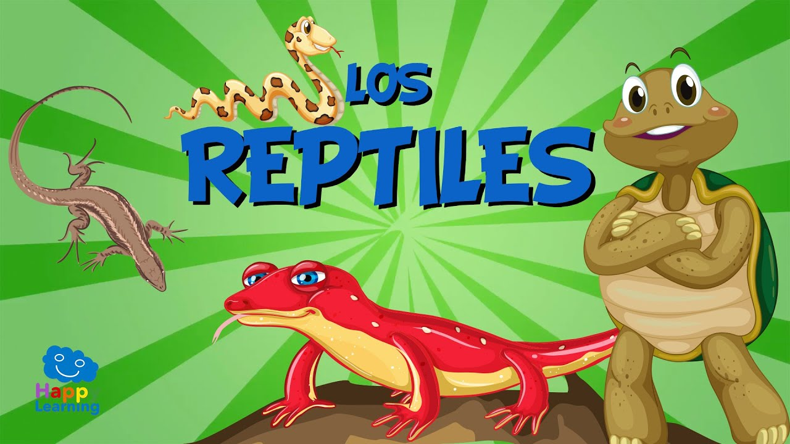
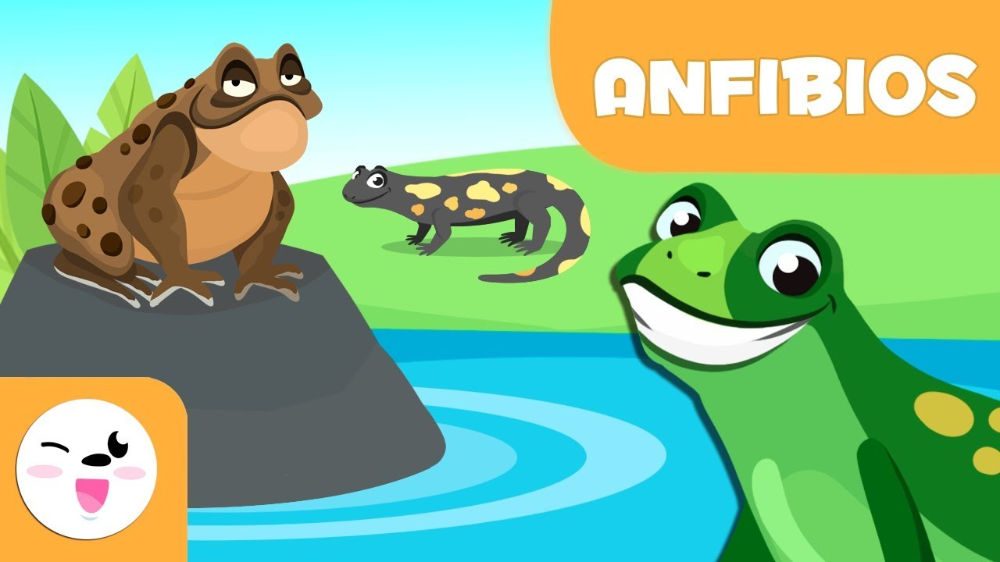
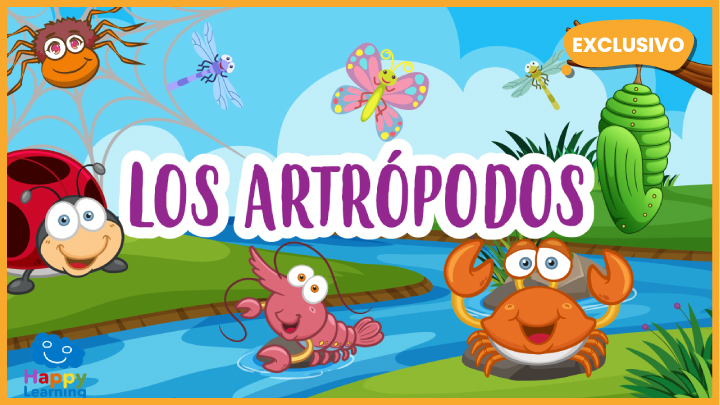

Clasificaciones de los animales
Bienvenidos a mi pagina informativa
Acompañame en este viaje educativo :3
Los mamíferos
Algunas características de los mamíferos
- Son de sangre caliente.
- En su gran mayoría son vivíparas.
- Las hembras poseen glandulas mamarias.
- En su gran mayoría tienen pelaje.
- Tienen pulmones.
- Pueden regular su temperatura corporal.
- Son vivíparos.
Las aves
Algunas características de las aves
- Poseen plumas.
- Son de sangre caliente.
- Tienen 2 alas y 2 patas.
- La mayoría en lugar de dientes poseen un pico.
- En su gran mayoría tienen pelaje.
- Son ovíparas.
Los peces
Algunas características de los peces
- Poseen branquias.
- Tienen vertebras.
- Solo viven bajo el agua.
- La mayoría no tienen parpados.
- No pueden regularse la temperatura corporal por si mismos.
- La mayoría esta cubierta de escamas.
- pueden ser ovíparos o vivíparos.
Los reptiles

Algunas características de los reptiles
- Son de sangre caliente.
- Tienen vertebras.
- La mayoría son cuadrupeda pero arrastran parte de su cuerpo.
- Son ovíparos.
- Tienen piel áspera, escamosa y resistente.
- No pueden regular su temperatura internamente.
Los anfibios

Algunas características de los anfibios
- Sufren Metamorfosis en su etapa de crecimiento.
- Tienen vertebras.
- Son de sangre fría.
- Son carnivoros.
- Pueden respirar por la piel o por pulmones.
- Son ovíparos.
- La mayoría esta cubierta de escamas.
Los artrópodos

Algunas características de los artrópodos
- Se pueden adaptar a cualquier ambiente.
- Tienen patas articuladas.
- Sus cuerpos se dividen en segmentos.
- Son invertebrados.
- La mayoría posee un exoesqueleto.
- Son la clase tiene mas animales en el mundo.
- Todos los artrópodos poseen más de 2 pares de patas.